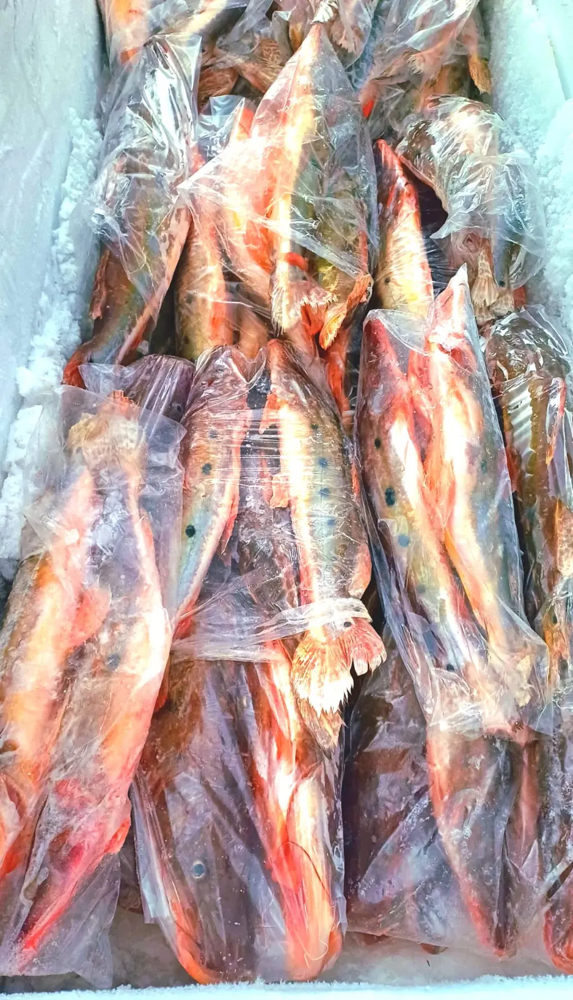
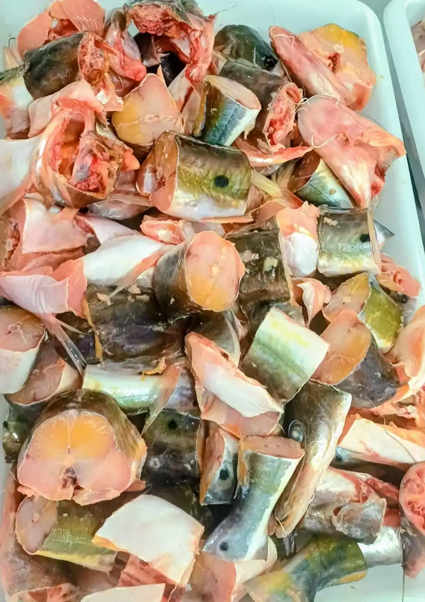

Jurupoca
Hemisorubim platyrhynchos
Escolha o Corte:
Retire na loja: R. Bom Jardim, 379 — Centro, Cáceres.
Jurupoca: Sabor Adocicado e Carne Macia do Rio Paraguai
A Jurupoca é um peixe muito querido pelos pescadores e moradores da região de Cáceres e de toda a bacia do Rio Paraguai. De porte médio, ela pertence à mesma família do Pacu e da Pacupeva, mas se diferencia pelo sabor levemente adocicado da carne — resultado de uma dieta baseada em frutos, sementes e raízes que caem nas margens dos rios durante o período de cheia. Esse hábito alimentar confere à sua carne uma doçura natural e um aroma único que os cozinheiros experientes da região sabem aproveitar muito bem.
Uma das grandes vantagens da Jurupoca é a ausência das famosas espinhas em formato de "Y" que tanto incomodam em outros peixes de escama da região. Isso a torna uma escolha excelente para famílias com crianças ou para quem não está acostumado a lidar com espinhas intermusculares. A carne é macia, de coloração branca e responde muito bem ao calor do óleo — frita fica dourada e crocante por fora, incrivelmente suculenta por dentro. As postas também ficam ótimas em caldeirada ou assadas na brasa com sal grosso, limão e alho.
As receitas mais populares com a Jurupoca na culinária regional são o peixe frito inteiro acompanhado de mandioca cozida e arroz branco, o ensopado pantaneiro com pimentão e tomate, e a Jurupoca em postas assada na brasa. Na Peixaria Rio Paraguai você encontra a Jurupoca disponível inteira ou em postas, sempre fresca e capturada de forma responsável durante os períodos permitidos pela legislação ambiental. Consulte disponibilidade pelo WhatsApp antes de visitar a loja.